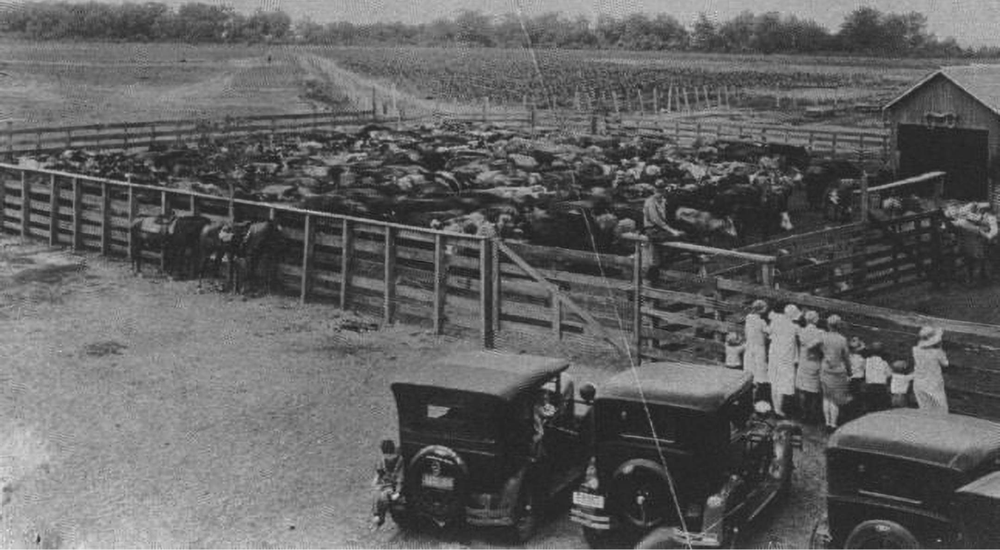
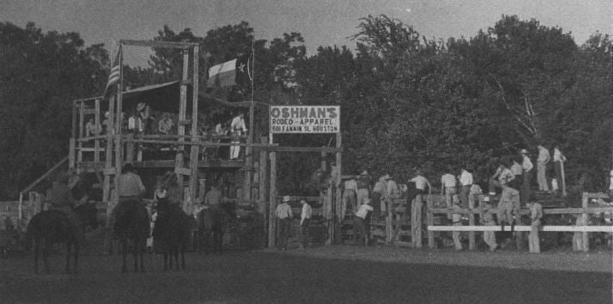
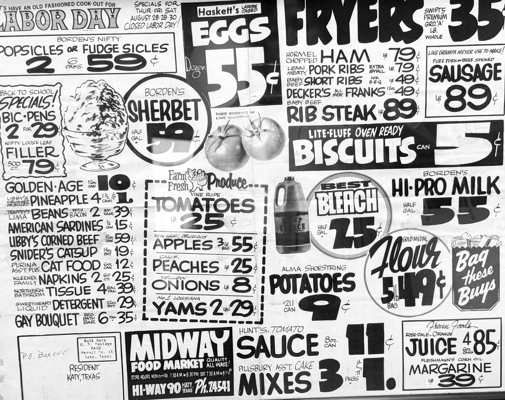
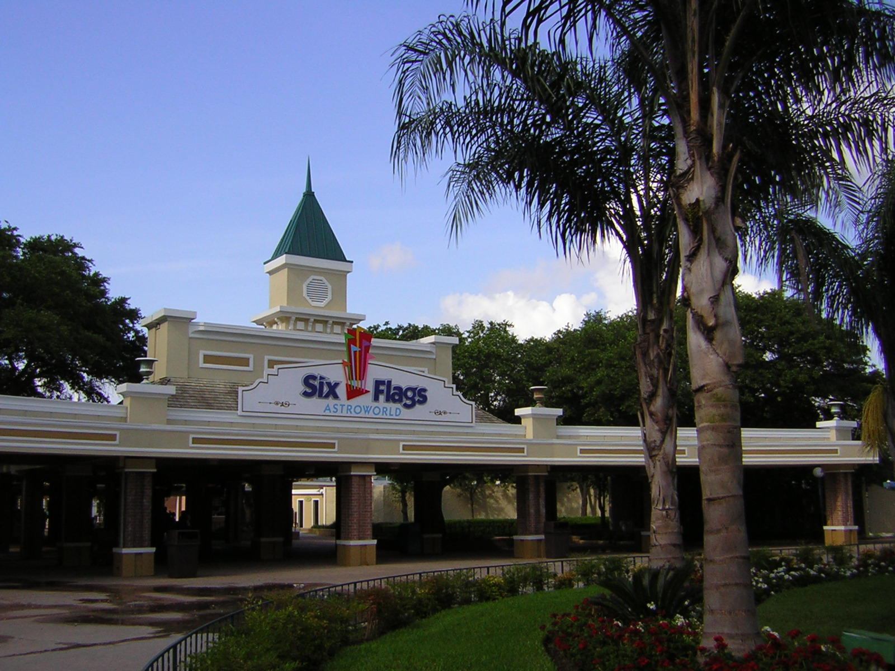
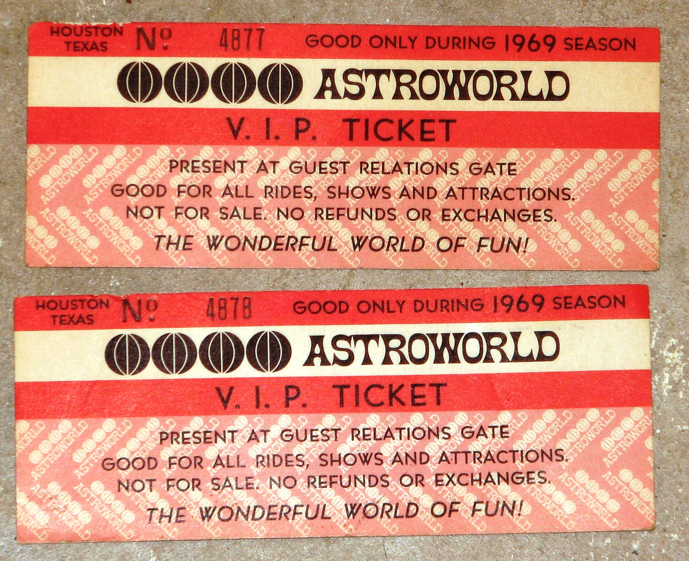
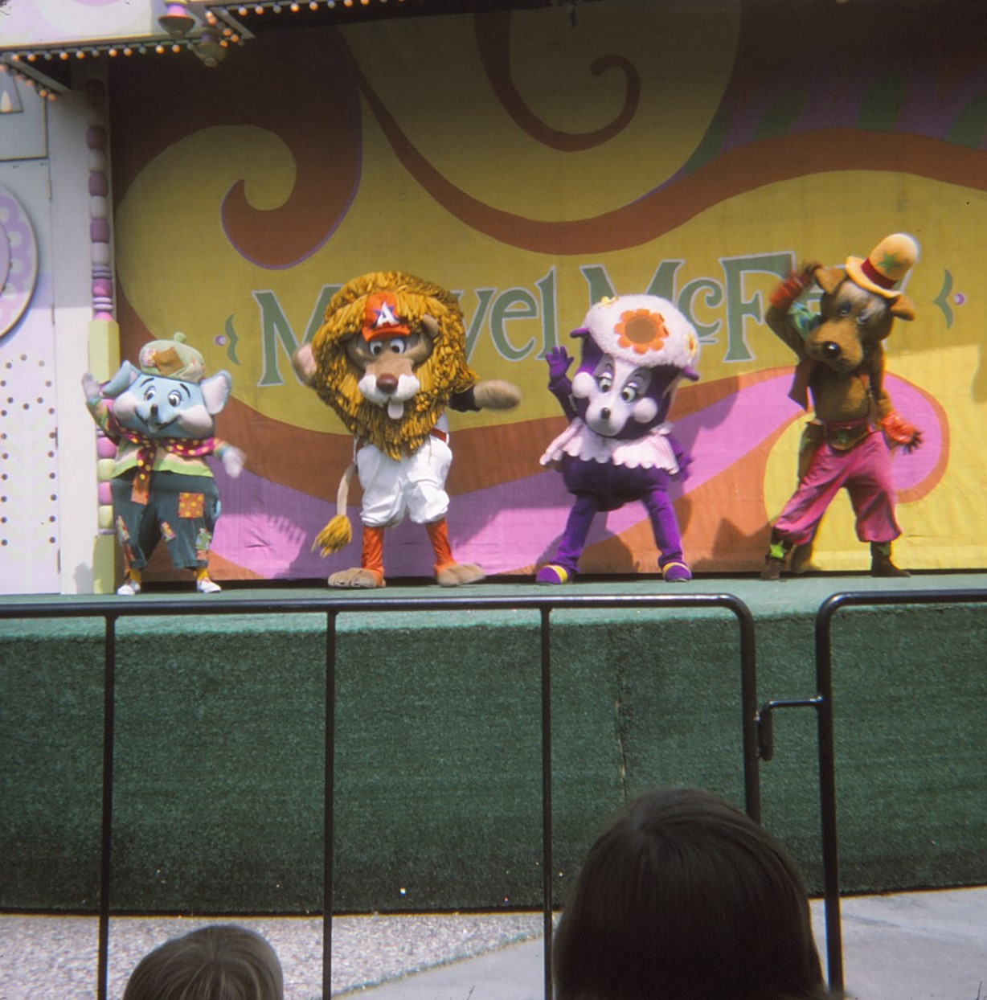
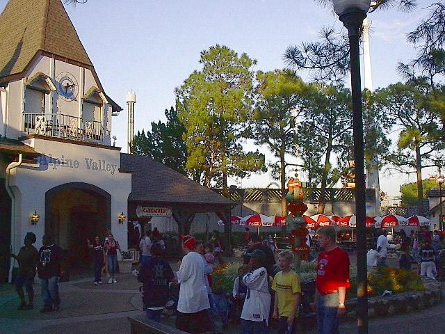
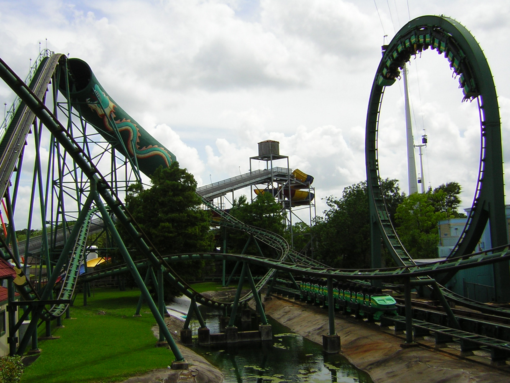

Ranching Heritage & Rodeo
Livestock Days at LH7 Ranch
This historic photograph shows the bustling cattle pens of the LH7 Ranch. This was the ranch's annual 1918 rodeo where families gathered at the wooden fences to watch livestock auctions and agricultural fairs, while vintage cars lined the grounds. This is more than a ranching scene as it reflects the deep roots of Katy's identity showing hard work, rural heritage and the shared spirit of a town built around its land and livestock.


Image courtesy of James E. Taylor High School
Rodeo Pride in Old Katy
This photograph captures the spirit of LH7 Ranch. With flags waving and spectators gathered on horseback and wooden platforms, it reflects the ranch's role as both a working cattle operation and a community gathering place. Events like these showcased not only rodeo skills but also the traditions that connected Old Katy's residents. This has been continued today, with modern twists, to celebrate Texas culture.


Image courtesy of James E. Taylor High School
Newspaper Ad from the 1950s
This newspaper highlights the everyday grocery prices during this era. It provides a glimpse of the economy at the time, illustrating the affordable prices in the 1950s. This is a drastic comparison to today's grocery prices as inflation has significantly increased the cost of basic everyday items.

Image courtesy of James E. Taylor High School
AstroWorld Theme Park
AstroWorld was a major amusement park in the Houston-Katy area, that operated from 1968 to 2005 and became a landmark for generations of Texans. According to the Texas State Historical Association (TSHA), the park was developed by Roy Hofheinz, a former Houston mayor and judge, as part of his larger vision to create an entertainment district surrounding the Astrodome. When it first opened, AstroWorld was one of the most modern theme parks in the country, featuring innovative roller coasters, family rides, and themed sections that reflected both space-age excitement and Texas culture.
Despite its popularity and cultural significance, AstroWorld closed in 2005. Six Flags decided to shut down the park due to declining attendance, high maintenance costs, and the increasing value of the land on which the park sat. Although many residents hoped the park would be preserved or relocated, it was ultimately demolished, leaving the site vacant.





Image 1: Chris Hagerman / Flickr, CC-BY 2.0 · Image 2: Cristan.williams / Wikimedia, CC-BY 3.0 · Image 3: Larry Syverson / Flickr, CC-BY-SA 2.0 · Image 4: Postoak / Wikimedia Commons, Public Domain · Image 5: Chris Hagerman / Flickr, CC-BY 2.0
Sources: Daniels, Delicia. "TSHA | Astroworld." TSHA, 18 July 2017. Accessed 2 Jan. 2026. Sullivan, Marcus. "Remembering Astroworld: 10 Years Later." Fox 26 Houston, 31 Oct. 2015. Accessed 2 Jan. 2026.